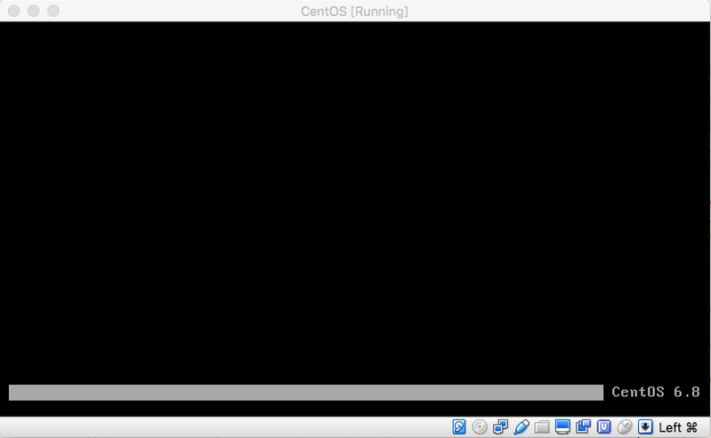

Continuing from Part#1
After I rebooted my system, there was only the CentOS bar thingy (in the screenshot below). The black screen was one of the various virtual terminals running in CentOS.

Note:
Ctrl + Alt + Fi (i = 1,2,3,4,5,6,7..)are used to switch between the various virtual terminals.
I went ahead with
Ctrl + Alt + F2and logged in into the terminal and went on with my task. Yay!
- Checked
MapR admin panelfrom browser dashboard of my host machine and saw a10% dropin memory consumption and MapR services were running. Yay! Mission Accomplished or so I thought.
Actual fix:
- Switch off the
wardenservice.
bash-shell service mapr-warden stop
- The memory consumption is tuned by updating the following properties in
warden.conffile to the new values.
service.command.cldb.heapsize.percent=8
service.command.cldb.heapsize.max=256
service.command.cldb.heapsize.min=256
service.command.mfs.heapsize.percent=15
service.command.mfs.heapsize.maxpercent=30
service.command.mfs.heapsize.min=512
service.command.webserver.heapsize.percent=3
service.command.webserver.heapsize.max=128
service.command.webserver.heapsize.min=128
service.command.nfs.heapsize.percent=3
service.command.nfs.heapsize.min=64
service.command.nfs.heapsize.max=64
service.command.os.heapsize.percent=10
service.command.os.heapsize.max=3000
service.command.os.heapsize.min=256
service.command.warden.heapsize.percent=1
service.command.warden.heapsize.max=256
service.command.warden.heapsize.min=64
service.command.zk.heapsize.percent=1
service.command.zk.heapsize.max=256
service.command.zk.heapsize.min=128- Switch on the
wardenservice.
bash-shell service mapr-warden start